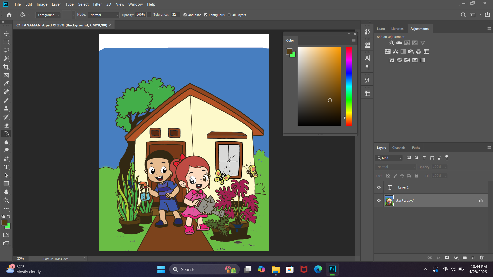
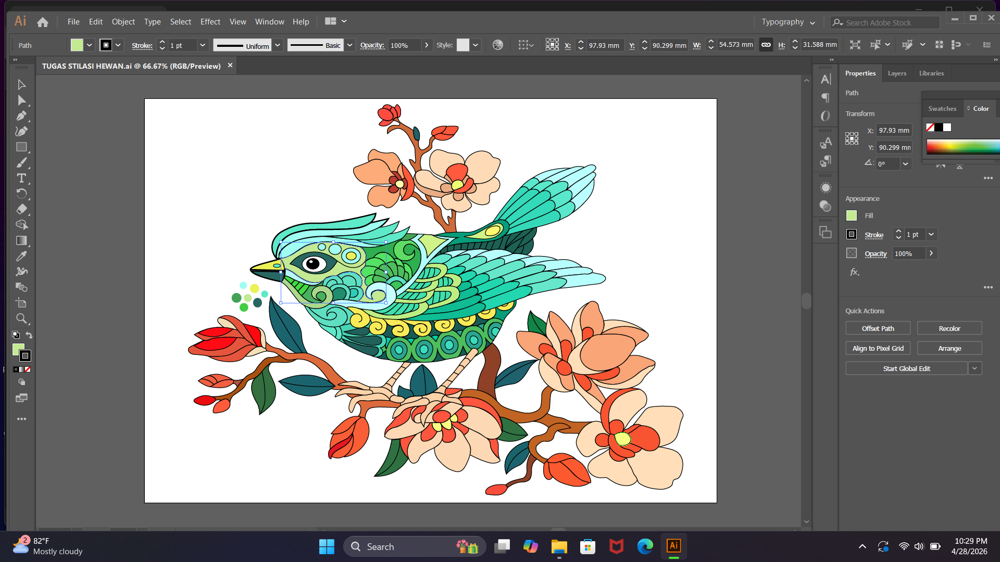
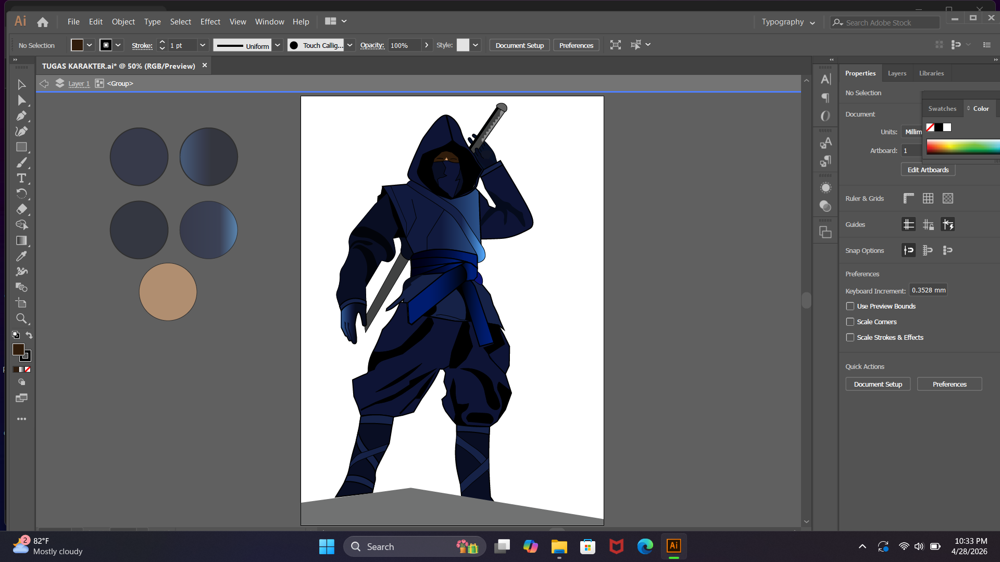
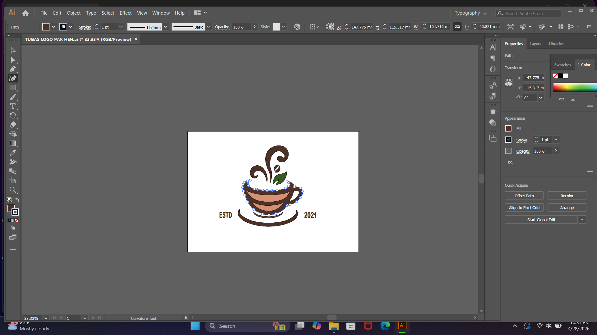
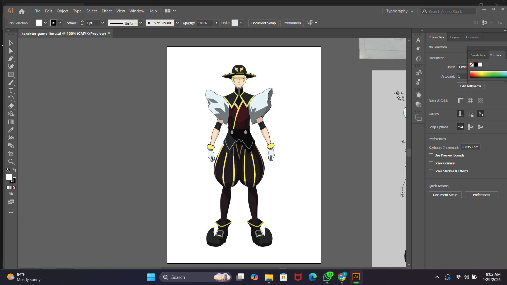

Ibnu Choiri
KREATOR UGC

Portofolio
Pribadi
★
Desain Komunikasi Visual
SMK Negeri 10 Surabaya


Halo, saya Ibnu Choiri Hammad.
Saya merupakan siswa kelas XII jurusan Desain Komunikasi Visual (DKV) di SMK Negeri 10 Surabaya. Selama menempuh pendidikan, saya mempelajari berbagai bidang kreatif seperti desain grafis, Adobe Illustrator, Photoshop, fotografi dan pembuatan desain UI/UX.
Saya memiliki ketertarikan dalam mengembangkan ide menjadi karya yang kreatif, menarik, dan memiliki karakter. Melalui pendidikan di bidang DKV, saya terus berusaha meningkatkan kemampuan serta pengalaman sebagai bekal untuk melanjutkan pendidikan dan memasuki dunia kerja di bidang kreatif.
MENGEMBANGKAN KEAHLIAN DALAM EDITING FOTO & VIDEO, GRAPHIC DESIGN, FOTOGRAFI, DAN VIDEOGRAFI UNTUK MENCIPTAKAN KARYA VISUAL YANG MENARIK DAN BERKARAKTER.








KONSEP VISUAL YANG DIPERBARUI DIRAJUNKAN DENGAN FOKUS PADA SUASANA, KUALITAS PELAYANAN, DAN PRESENTASI MEREK UNTUK MENIMBULKAN MINAT DAN MENDORONG TAMU POTENSIAL UNTUK MENYUSULI RESTORAN. PROYEK KONSEP DIBUAT UNTUK TUJUAN PORTOFOLIO. GAMBAR DIGUNAKAN SEPADANYA UNTUK KEPERLUAN DEMONSTRASI.
05